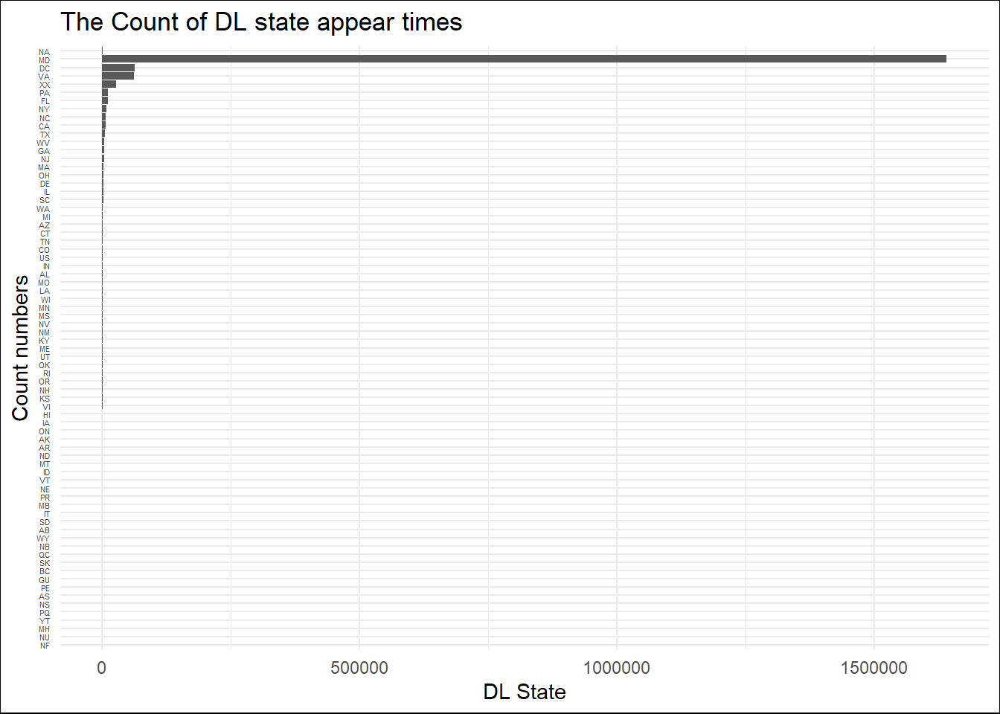
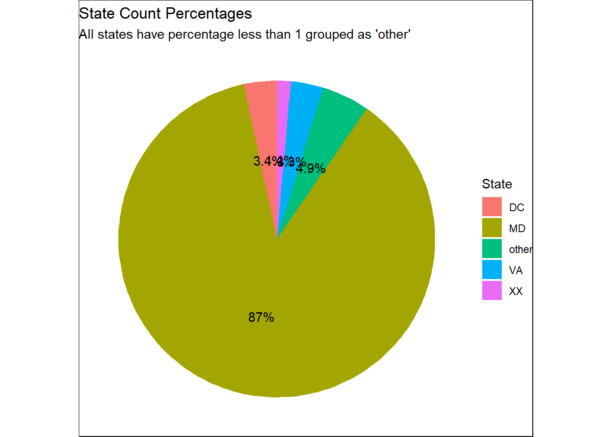

Warning: package 'ggplot2' was built under R version 4.3.1
library(tidyverse)
Warning: package 'tidyverse' was built under R version 4.2.3
Warning: package 'tibble' was built under R version 4.3.1
Warning: package 'tidyr' was built under R version 4.2.3
Warning: package 'readr' was built under R version 4.2.3
Warning: package 'purrr' was built under R version 4.3.1
Warning: package 'dplyr' was built under R version 4.3.1
Warning: package 'stringr' was built under R version 4.3.1
Warning: package 'forcats' was built under R version 4.2.3
Warning: package 'lubridate' was built under R version 4.2.3
── Attaching core tidyverse packages ──────────────────────── tidyverse 2.0.0 ──
✔ dplyr 1.1.3 ✔ readr 2.1.4
✔ forcats 1.0.0 ✔ stringr 1.5.0
✔ lubridate 1.9.2 ✔ tibble 3.2.1
✔ purrr 1.0.2 ✔ tidyr 1.3.0
── Conflicts ────────────────────────────────────────── tidyverse_conflicts() ──
✖ dplyr::filter() masks stats::filter()
✖ dplyr::lag() masks stats::lag()
ℹ Use the conflicted package (<http://conflicted.r-lib.org/>) to force all conflicts to become errors
load("C:/Users/pfwan/OneDrive/Desktop/MA 615/ma-4615-fa23-final-project-burg-team-9/dataset/traffic_violations.RData")mydata <- traffic_data_cleanstate_counts <- mydata %>%group_by(`DL State`) %>%summarise(count=n()) %>%arrange(desc(count))plot1 <-ggplot(state_counts, aes(y=reorder(`DL State`, count),x=count)) +geom_bar(stat ="identity") +labs(title ="The Count of DL state appear times", x ="DL State", y ="Count numbers") +theme_minimal() +theme(axis.text.y =element_text(size =4)) +theme(plot.background =element_rect(fill ="white"))plot1

ggsave("blog plot1 .png", plot1, width =8, height =4, units ="in")
state_percentage <- mydata %>%group_by(`DL State`) %>%summarise(count =n()) %>%mutate(percentage = (count /sum(count)) *100) %>%arrange(desc(count)) %>%mutate(state_group =ifelse(percentage <1, "other",`DL State`)) %>%group_by(state_group) %>%summarise(count =sum(count), percentage =sum(percentage))plot2 <-ggplot(state_percentage, aes(x ="", y = percentage, fill = state_group)) +geom_bar(stat ="identity") +coord_polar("y", start =0) +labs(title ="State Count Percentages", subtitle ="All states have percentage less than 1 grouped as 'other'",fill ="State") +geom_text(aes(label =paste0(round(percentage, 1), "%")),position =position_stack(vjust =0.5))+theme_void()+theme(plot.background =element_rect(fill ="white"))plot2

ggsave("blog plot2 .png", plot2, width =8, height =4, units ="in")
After reviewing our initial subset of data, we decided to add back some columns we previously removed as we believe they could potentially have an interesting and significant correlation with race, and we had space to incorporate these columns while keeping our subset of data under 50 MB. The columns include: Time of stop, Accident, Fatal, Alcohol, Driver’s License State, and Model. During our basic exploratory data analysis we noticed that the Driver’s License State is predominantly Maryland. While this is an unusually high frequency for one state, in the context of our data it makes sense because our data was collected by the Montgomery County, Maryland Police department.
After thorough discussion and analysis of our filtered data, we have identified a crucial area for investigation: the potential relationship between drivers’ race and their original state. This exploration has the potential to significantly benefit local government statistics, enhance their understanding of the local traffic landscape, and ultimately improve work efficiency. In order to achieve this goal, visualizing the driver state and evaluating the outliers and data distribution in this variable are the first steps we need to take.Thus, we have chosen to use DL State, representing the state of the driver’s home address, rather than the variable State, which denotes the state where the vehicle is registered as our plot parameter.
Depending on the graph “blog plot1” we build, the data presented in this graph shows that Maryland (MD) has a significantly larger volume of data compared to any other state, even the combined data from all other states.Furthermore, the pie chart “blog plot2” that using the state percentage,where categorizes states with a percentage less than 1 as “other”, also shows that the percentage of MD is 87 percent, a very unusual high value. After discussion, we believe that the main reason for this phenomenon is that our dataset primarily consists of daily statistics from Montgomery County, Maryland, so a large portion of the data originating from Maryland residents is reasonable.
After further research on how to clean up this part of the data, we believe that it should be handled differently based on the consideration of other variables, especially the distribution of race. If we focus our research on the race of Maryland natives,we can treat data from other states as outliers or unusual values and consider cleaning them up. However, if we focus on the involving out-of-state drivers race, the data from Maryland should be seen as a substantial influence on the model’s accurate representation of unusual outliers.Given that we have not fully explored their potential connections to other factors, their potential prior connections to other factors, and that neither the feasibility of other factors as model variable nor the data cleanup considerations have been fully completed, we have decided not to undertake data cleaning for the unusual values presented in this chart.
In our next step, some important topics will be discussed: the race proportion of driver’s and its relationship between Arrest type and State, and the potential linear relationship between Race, DL states and Violation Type. All data cleaning will be gradually determined and implemented in subsequent discussions.